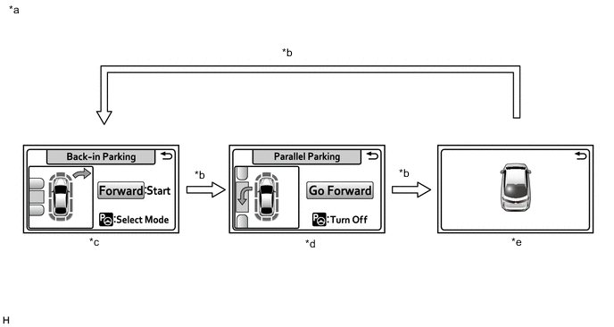
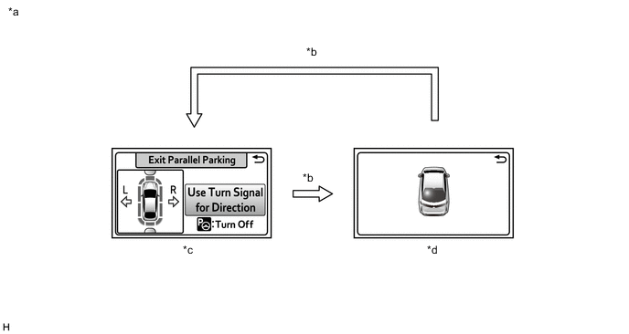
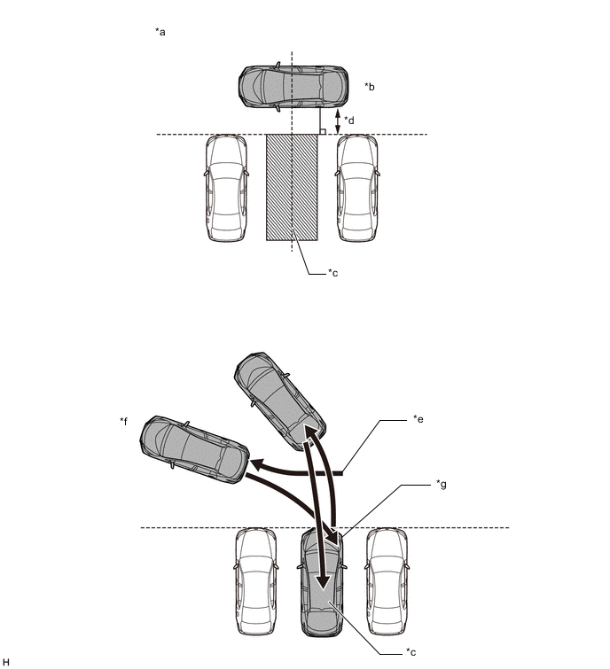
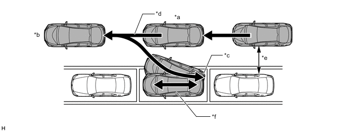
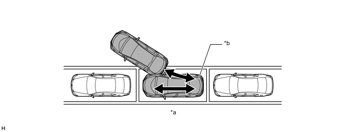

FUNCTION OF COMPONENTS
The simple intelligent parking assist system consists of the following components:
| Component | Function |
|---|---|
| Clearance Warning ECU Assembly |
|
| S-IPA Switch | Sends the switch operation signal to the clearance warning ECU assembly. |
|
Controlled by the clearance warning ECU assembly and detects an available parking space |
| Steering Sensor | Detects the angle of the steering wheel and sends the resulting signals to the clearance warning ECU assembly via CAN communication. |
| Power Steering ECU Assembly |
|
| Skid Control ECU | Sends the stop switch signal, vehicle speed signal, driving distance signal, and other vehicle condition signals to the clearance warning ECU assembly. |
| ECM | Sends status signals to the clearance warning ECU assembly via CAN communication. |
| Hybrid Vehicle Control ECU Assembly | Sends the shift state signal to the clearance warning ECU assembly via CAN communication |
| Air Conditioning Amplifier Assembly | Sends the outside temperature signal to the clearance warning ECU assembly via CAN communication. |
| Meter Circuit Plate |
|
| Airbag Sensor Assembly | Sends acceleration and yaw rate sensor signal to the clearance warning ECU assembly via CAN communication. |
| Main Body ECU (Multiplex Network Body ECU) | Sends the vehicle information signal to the clearance warning ECU assembly via CAN communication. |
METER DISPLAY OPERATION
When the simple intelligent parking assist system is operating normally (no DTCs are stored) and the S-IPA switch is pressed, the display screen changes.
Note
It is not possible to select a display screen if all display conditions are not met. Refer to the display conditions for each screen.
Tech Tips
A buzzer sounds when the S-IPA switch is pressed and the screen changes.
Parallel parking mode and back-in parking mode

| *a | Parking Mode Selection: | *b | S-IPA switch Pressed |
| *c | Parallel Parking Mode | *d | Back-in Parking Mode |
| *e | Default Screen | - | - |
Exit parallel parking mode

| *a | Parking Mode Selection: | *b | S-IPA switch Pressed |
| *c | Exit Parallel Parking Mode | *d | Default Screen |
BACK-IN PARKING MODE
Back-in parking mode operation

| *a | Empty Parking Space Detection | *b | Point at Which to Stop the Vehicle |
| *c | Desired Parking Space | *d | Approximately 1 m (3.28 ft.) |
| *e | Point at Which Automatic Operation of the Steering Wheel Begins | *f | Point at Which the Vehicle Needs to Be Reversed |
| *g | Point at Which the Direction of the Vehicle Needs to Be Changed | - | - |
While keeping a distance of approximately 1 m (3.28 ft.) from the parking space, drive the vehicle at a vehicle speed of 30 km/h (19 mph) or less with drive (D) selected and stop the vehicle beside the center of the parking space.
With the vehicle stopped, press the S-IPA switch to select parking assist mode. (The buzzer will then sound.)
Tech Tips
Depending on the speed or angle of the vehicle, the size of the parking space, the distance to the parking space, or vehicles surrounding the parking space, detection of an empty parking space by the ultrasonic sensors may not be possible.
Depending on the surroundings, the ultrasonic sensors may not be able to detect a desired parking space.
Following the guidance on the screen, drive the vehicle forward at a vehicle speed of 7 km/h (4 mph) or less. The S-IPA indicator light illuminates, the buzzer sounds and automatic operation of the steering wheel begins.
Tech Tips
The driver is required to operate the brakes to stop the vehicle.
The buzzer sounds when the position at which the vehicle needs to be reversed is reached.
Following the guidance on the screen, select reverse (R) and start reversing the vehicle at a vehicle speed of 7 km/h (4 mph) or less.
Tech Tips
When the vehicle reaches the point where the direction of the vehicle needs to be changed, the buzzer sounds. Following the guidance on the screen, stop the vehicle and move the vehicle forward or backward.
When the vehicle reaches the desired parking position, the buzzer sounds, the S-IPA indicator light turns off and automatic operation of the steering wheel ends.
PARALLEL PARKING MODE
Parallel parking mode operation

| *a | Position Beside the Desired Parking Space | *b | Point at Which Automatic Operation of the Steering Wheel Begins |
| *c | Point at Which the Direction of the Vehicle Needs to Be Changed | *d | Empty Parking Space Detection |
| *e | Approximately 1 m (3.28 ft.) | *f | Desired Parking Space |
Stop the vehicle at the position beside the desired parking space. Then press the S-IPA switch to select parallel parking assist mode with a shift state other than park (P) selected and at a vehicle speed of 30 km/h (19 mph) or less. (The buzzer will then sound.)
Tech Tips
It is possible that parallel parking mode may operate in the following situations. Follow the guidance on the screen.
The S-IPA switch is pressed when the vehicle has moved beyond the position just beside the desired parking space.
The S-IPA switch is pressed when the vehicle is still moving toward the position just beside the desired parking space.
The S-IPA switch is pressed while the vehicle is moving toward the point at which automatic operation of the steering wheel begins and with the shift status reverse (R) is selected.
While keeping a distance of approximately 1 m (3.28 ft.) from the desired parking space and keeping the vehicle parallel to the parking space, drive the vehicle forward at a vehicle speed of 30 km/h (19 mph) or less. If the side ultrasonic sensors detect that the parking space is suitable, the message "Space Detected Go Forward" will be displayed on the screen.
Tech Tips
Depending on the speed or angle of the vehicle, the size of the parking space, the distance to the parking space, or vehicles surrounding the parking space, detection of an empty parking space by the side ultrasonic sensors may not be possible.
Depending on the surroundings, the side ultrasonic sensors may not be able to detect a desired parking space.
If the side ultrasonic sensors detect that the parking space is not suitable, "Space Detected Go Forward" will not be displayed on the screen.
Following the guidance on the screen, move the vehicle to the point at which automatic operation of the steering wheel begins (the buzzer will sound), then stop the vehicle and select reverse (R).
Tech Tips
If the automatic operation of the steering wheel cannot be performed, the buzzer will not sound.
Following the guidance on the screen, move the vehicle backward at a vehicle speed of 7 km/h (4 mph) or less, the buzzer sounds, the S-IPA indicator light illuminates and automatic operation of the steering wheel begins.
Tech Tips
When the vehicle reaches a point where direction of the vehicle needs to be changed, the buzzer sounds. Following the guidance on the screen, stop the vehicle and move the vehicle forward or backward.
The driver is required to operate the brakes to stop the vehicle.
When the vehicle reaches the desired parking position, the buzzer sounds, the S-IPA indicator light turns off and automatic operation of the steering wheel ends.
EXIT PARALLEL PARKING MODE
Exit parallel parking mode operation

| *a | Point at Which Automatic Operation of the Steering Wheel Begins | *b | Point at Which the Direction of the Vehicle Needs to Be Changed |
While the vehicle is stopped with park (P) selected, press the S-IPA switch to select parallel parking departure assist mode. (The buzzer will then sound.)
Following the guidance on the screen, operate the headlight dimmer switch assembly to select the direction of departure, then the recommended shift state will be displayed.
Following the guidance on the screen, select the recommended shift state, then the buzzer sounds, the S-IPA indicator light illuminates and automatic operation of the steering wheel begins.
Tech Tips
When the vehicle reaches a position where direction of the vehicle needs be changed, the buzzer sounds and a notice to move the vehicle forward or backward is displayed.
When the vehicle reaches the position at which departure is possible, the buzzer sounds, the S-IPA indicator light turns off and automatic operation of the steering wheel ends.
COMMUNICATION SYSTEM OUTLINE
CAN communication system
The simple intelligent parking assist system uses CAN communication for data communications between the clearance warning ECU assembly and each ECU.
If a problem occurs in the CAN communication line, the clearance warning ECU assembly outputs a CAN communication malfunction DTC. (To check, use the GTS.)
If a CAN communication line malfunction DTC is output, repair the malfunction in the communication line and troubleshoot the simple intelligent parking assist system when data communication is normal.
Since the CAN communication line has its own length and route, it cannot be repaired temporarily with a bypass wire, etc.